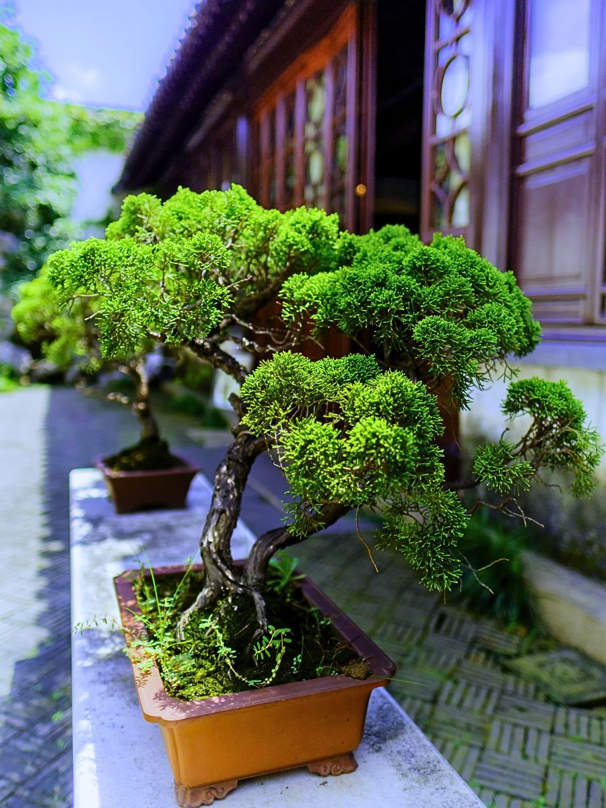
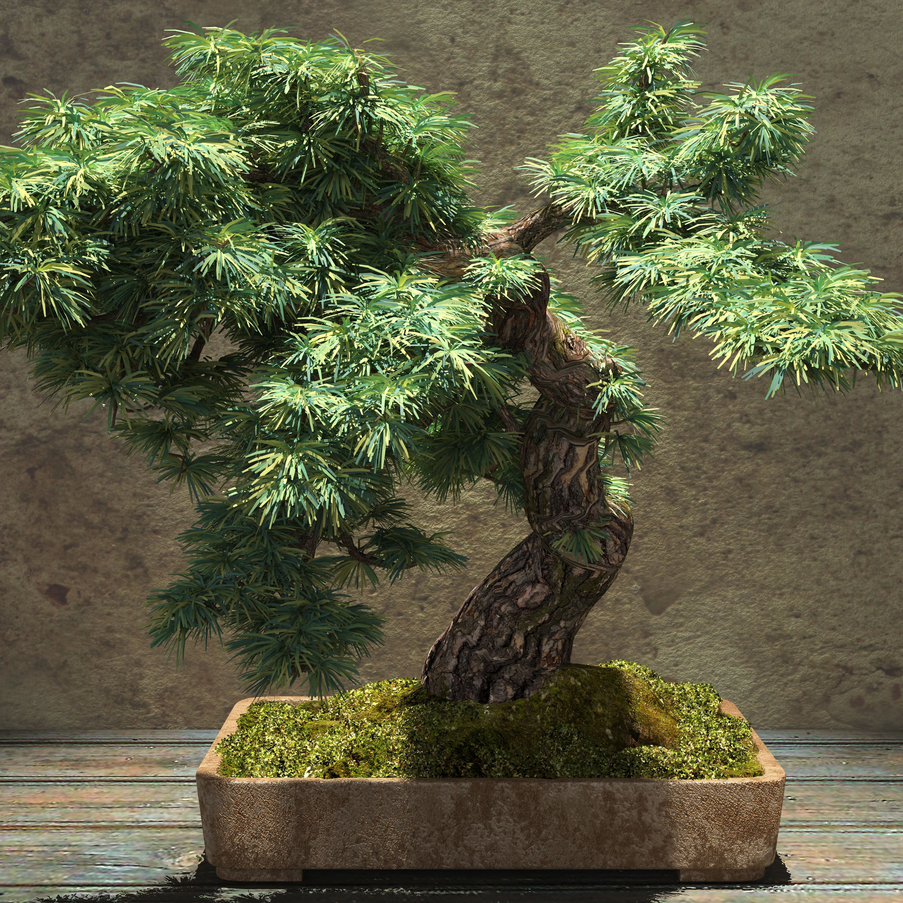
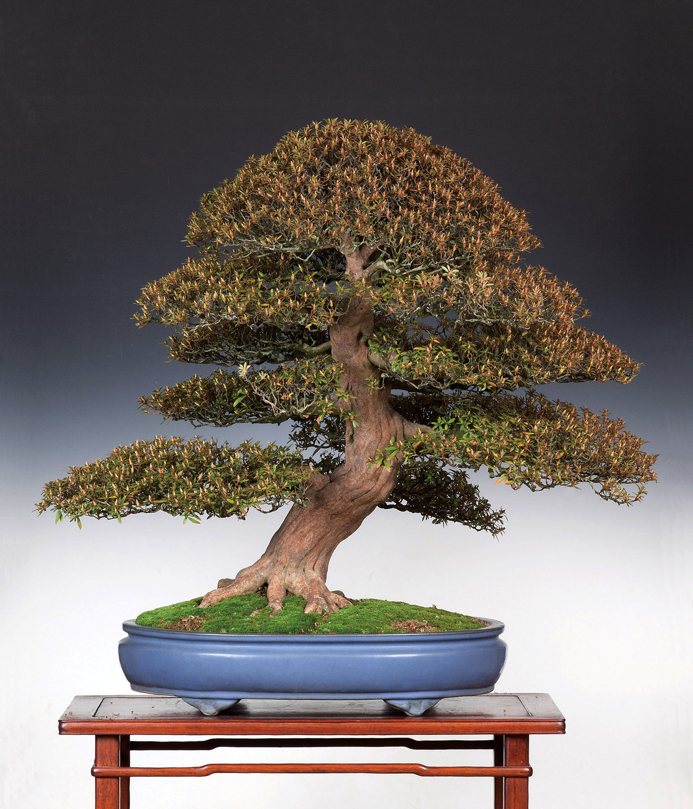
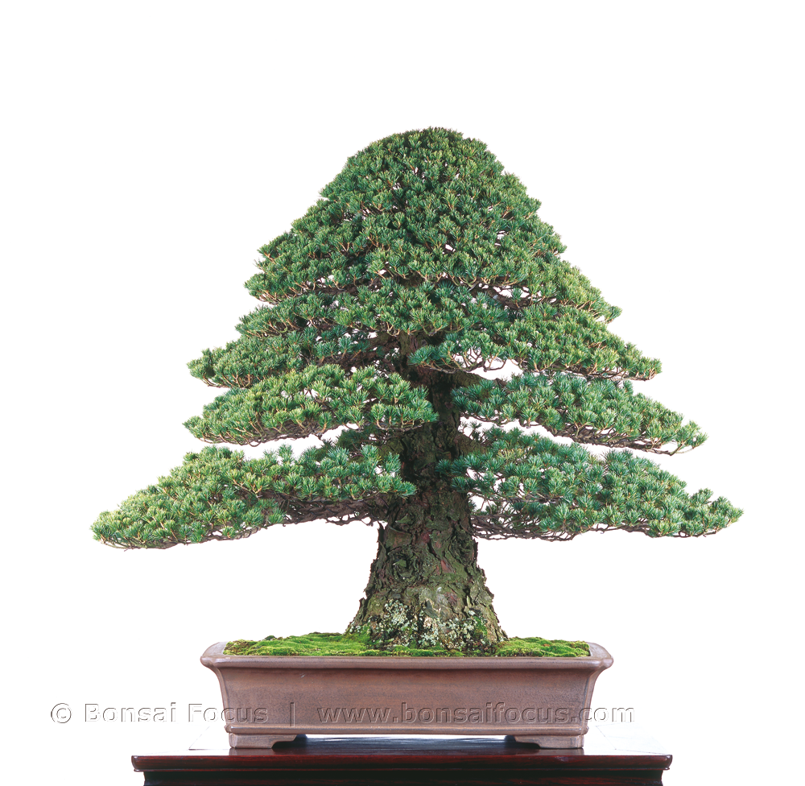
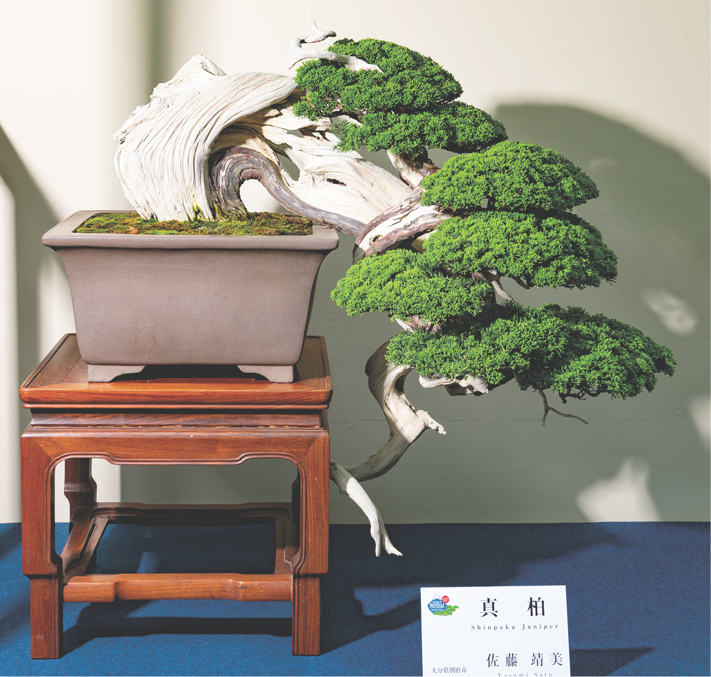

“ Dios juzga al árbol por sus frutos, no por sus raíces. ”
- Paulo Coelho
- Paulo Coelho
Conócelo
El bonsái no es una especie de árbol enano, sino el arte de cultivar árboles en macetas limitando su crecimiento mediante técnicas controladas para mantener una forma estética y armoniosa. Esta práctica conlleva una filosofía de paciencia y meditación activa que requiere disciplina y respeto por la naturaleza, implicando técnicas fundamentales como la poda, el modelado con alambre, el trasplante y el control preciso del riego y la ubicación. En última instancia, el bonsái busca representar un paisaje en miniatura que permita al cultivador observar el paso del tiempo y las estaciones, equilibrando la conexión entre el ser humano y el mundo natural.

Tipos
Para iniciarse en éste bello mundo, es fundamental diferenciar los ejemplares según su entorno y los estilos más clásicos que definen su forma.

Son árboles que necesitan sentir el ciclo de las estaciones para vivir, por lo que deben estar siempre al aire libre.

Suelen ser especies tropicales que prefieren temperaturas constantes y, aunque pueden estar dentro de casa, requieren mucha luz natural y humedad.

El tronco tiene curvas suaves, lo cual le da un aspecto más natural y dinámico.

El tronco es totalmente recto y se estrecha hacia la punta, con ramas distribuidas de forma equilibrada.

El árbol crece hacia abajo, superando el borde de la maceta, simulando cómo los árboles crecen en acantilados debido a la nieve o el viento.